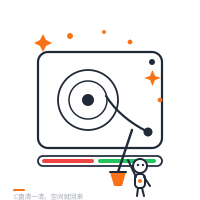
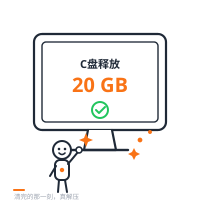
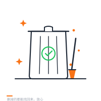

电脑越用越卡，C 盘越装越满，却不知道空间都被谁吃了。这个工具会先「看」清楚每一块空间去了哪里，再告诉你哪些能删、哪些别碰——删掉的，都能从回收站找回来。
扫描完成后，每一项空间占用都会被分到三种颜色之一。绿色放心清，黄色想一想，红色别手碰。你只需要对绿色点一下。
纯缓存、临时文件、更新残留——删了不影响任何功能，还能随时从回收站找回。
可能包含你的聊天记录、文档、设计文件。我们会告诉你里面是什么、怎么清最安全。
大应用不能直接删文件，要走正规卸载流程。我们会给你具体的卸载步骤。
对 AI 助手说「帮我清理 C 盘」或「C 盘满了」。它会自动扫描你的磁盘，大约十几秒。
浏览器打开一份清晰的报告：空间去哪了、哪些能删、能释放多少 GB，一目了然。
绿色项一键清进回收站，实时看到进度和释放了多少空间。反悔了？回收站里都能找回来。



分析阶段不写、不改、不删任何文件，只是安静地「看」一遍你的磁盘。
默认「移到回收站」而非永久删除，给你留足后悔的余地。
AI 分级完成后会停下来问你「确认吗」，你不点头，它绝不擅自删除。
删除服务只在本机运行，每一层请求都经过校验，外部网络无法触碰你的文件。